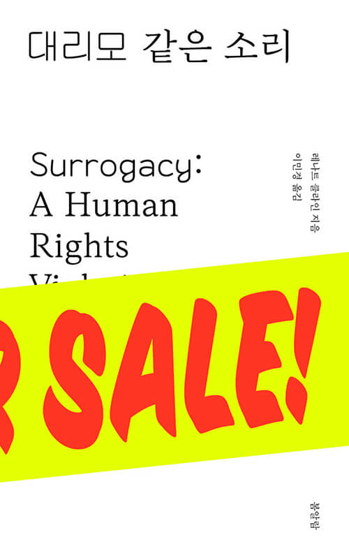
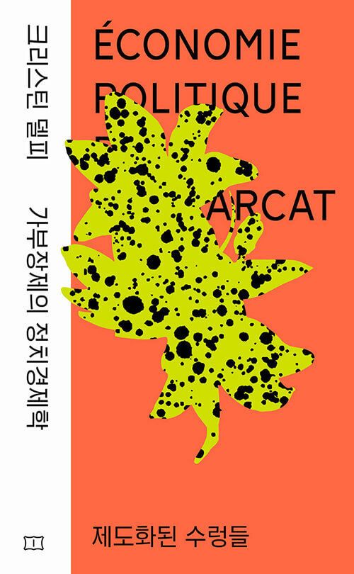

당신은
쾌활한
극렬페미니스트
스스로의 독서를 주도할 줄 아는 읽기의 달인입니다. 새로운 지식들이 당신을 기쁘게 할 거예요.
- 지적인 도전을 즐기는 편이에요. 호흡이 긴 책도 마다하지 않아요.
- 현실적이고 실용적인 지식 탐구에 관심 있어요.
- 평소 페미니즘 이슈에 친숙하고 관심이 깊어요.
- 명랑한 글, 분명한 말에서 에너지와 영감을 얻어요.
이런 책이 잘 맞아요!

대리모 같은 소리
대리모. 많이들 하던데… 뭐가 문제일까? 한권으로 정리한다! 대리모 산업의 본질과 현실, 쟁점, 맹점을 망라한 21세기 세계시민 필독서.

성매매 경험 당사자 무한발설
성매매라는 폭력을 똑바로 보고자 할 때 우리가 반드시 거쳐야 할 ‘당사자 발설’의 현장 기록. “이 책을 읽고 나서야 비로소 뭐가 문젠지 제대로 말할 수 있게 됐어요.”

크리스틴 델피 가부장제의 정치경제학
제도화된 수렁들
상속과 결혼 제도에 관한 크리스틴 델피의 선구적 분석 『유산 상속』 『결혼과 이혼』 수록. 아내의 지위는 ‘어쩌다’ 낮아진 것이 아니다. 이 제도들이 여성 억압을 ‘목적으로 한다’.